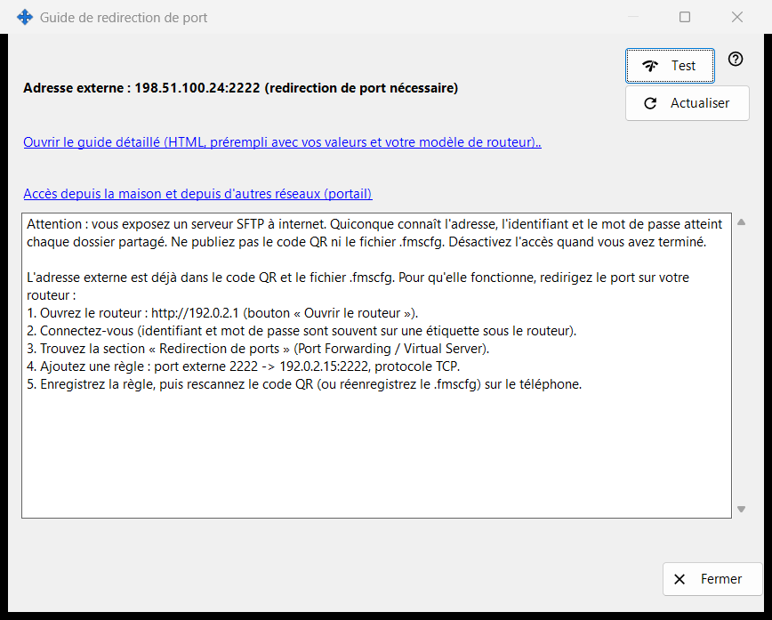
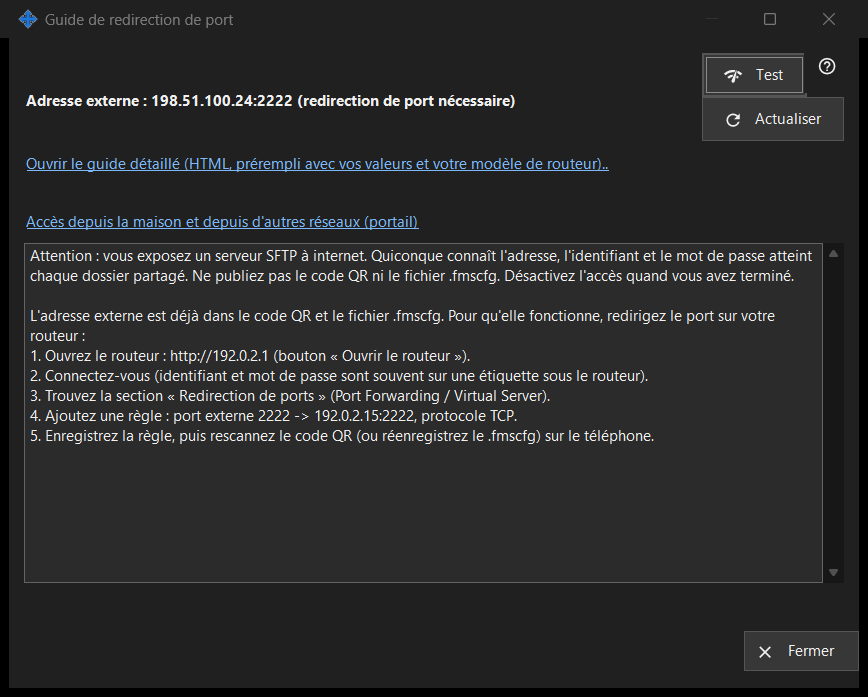

Guide de redirection de port
Objectif
Aide à rendre le partage joignable depuis l'extérieur de votre réseau domestique. Il affiche l'adresse externe et indique si le port a été ouvert automatiquement ou s'il faut le rediriger sur le routeur, et propose un test et un guide détaillé. Il s'ouvre depuis le bouton «Comment configurer l'accès internet» de la fenêtre principale.


Dans cet ordre
- Démarrez d'abord le partage ; sinon la fenêtre vous le demande.
- Lisez les lignes d'état : joignable, derrière un CGNAT ou redirection de port nécessaire.
- Si une redirection est nécessaire, ouvrez le guide détaillé et créez la règle sur le routeur.
- Appuyez sur «Test» pour sonder l'adresse depuis ce PC.
- Confirmez depuis le téléphone en données mobiles, Wi-Fi coupé.
Les éléments
État
La fenêtre détecte l'adresse externe et indique l'un des messages suivants : «Joignable depuis internet», «Adresse externe : .. (redirection de port nécessaire)», «Adresse externe inconnue - vérifiez sur le routeur.» ou «Derrière un CGNAT - injoignable depuis l'extérieur.». Lorsque le port a été ouvert automatiquement (UPnP), aucune configuration du routeur n'est nécessaire, mais seul le téléphone en données mobiles peut confirmer que cela fonctionne. «Actualiser» répète la détection.
Routeur et guides
La ligne du routeur affiche son adresse, ou «Détection du routeur..» pendant la recherche. Le lien «Ouvrir le guide détaillé (HTML, prérempli avec vos valeurs et votre modèle de routeur)..» ouvre un guide HTML local ; s'il ne peut pas s'ouvrir, la fenêtre le signale. Le lien «Accès depuis la maison et depuis d'autres réseaux (portail)» ouvre dans le navigateur la page correspondante du portail d'aide.
Test
Sonde l'adresse externe depuis ce PC et indique «Serveur SFTP joignable», «Port ouvert, mais aucune réponse SFTP», une connexion fermée (peut-être la limite de connexions) ou l'absence de réponse. Le résultat n'est pas concluant : de nombreux routeurs refusent depuis l'intérieur une requête vers leur propre adresse externe, donc la vérification fiable est le téléphone en données mobiles.
Sécurité
Ouvrir SFTP à internet donne tous les dossiers partagés à quiconque connaît l'adresse, l'identifiant et le mot de passe. Ne publiez ni le code QR ni le fichier .fmscfg, et désactivez le partage quand vous avez terminé. «Fermer» quitte la fenêtre.
Paramètres du gestionnaire · Paramètres de partage SFTP · Paramètres du serveur d’échange